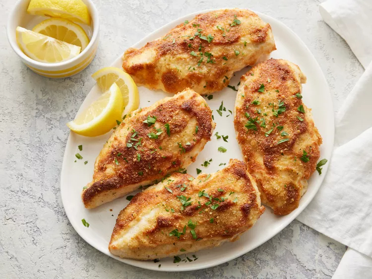

Make juicy Parmesan-crusted chicken with this quick and easy recipe.
Gather all ingredients.
Preheat the oven to 425 degrees F (220 degrees C). Line a rimmed baking sheet with parchment paper.
Mix mayonnaise and Parmesan together in a medium bowl until well combined.
Arrange chicken on the prepared baking sheet. Spread mayonnaise mixture over top, then top with bread crumbs.
Cook in the preheated oven until chicken is no longer pink in the center and the juices run clear, about 20 minutes. An instant-read thermometer inserted into the center should read at least 165 degrees F (74 degrees C).
You can substitute light or cholesterol-free mayonnaise and omit Parmesan completely.
To save time, use thin-cut chicken breasts. Prepare as directed, but decrease bake time to about 10 minutes. Instant-read thermometer results should be the same.